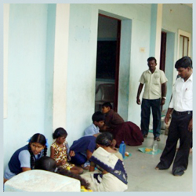
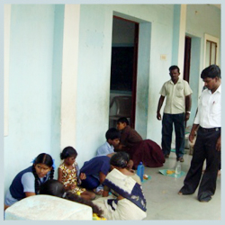
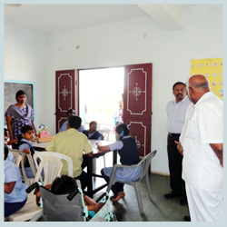
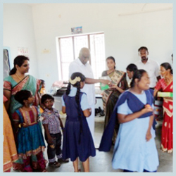

HEALTH AND EDUCATIONAL FOUNDATION
DR. S.ARULRAJ Health and Educational Foundation is a public charitable trust registered in the year 1995 No.V/S 12A of the I.T. Act, 1961 in Sl.No.47 / 1999 and is rendering Health & Educational Services for the population in and around Tuticorin, Tamilnadu. SAH foundation initiated by the visionary founder Dr. S.ARULRAJ and Late Mrs. Yaminiamma to render services to the poor and down trodden in this part of country including Rural Camps, Free-OPs , education and rural centres, started at 72, North Car Street, Tuticorin in small way and now has grown into a big Health and Educational Service organization
 

Top
SAH DIFFERENTLY ABLED SCHOOL
(FOR THE MENTALLY RETARDED)
SAH Differently Abled School was started on 01.02.2000 by Late Mrs. Yaminiamma, Founder of Dr. S.Arulraj Health and Educational Foundation. This school was started to strengthen the efficiency of mentally retarded children and to be honoured in the society as others and also to ensure their future brightness.
The primary objective of this centre is to provide opportunities to develop skills that would enhance the quality of life of the people with mental retardation. Our school is the first special school for the mentally retarded children in Pearl City. The school functioning at now 2/210, Sreenivasa Nagar, Madathoor – Koramballam Road, Madathoor, Tuticorin – 628 101 and as on date 30 Children are studying. This centre is running by the Dr. S.Arulraj Health and Educational Foundation and recognised by the state commissioner of disabled. (TN State Government)
Our SAH Differently Abled School - Madathoor
This school has been recognized by the state commissioner for the differently abled, Tamilnadu with effect from 13.08.2011 to 31.12.2012 recognition has been reveresed (vide Letter Proc.No. 4772/RDII4/2008 dated 07.08.2008 Now to recognition renewal process on going.SAH Differently Abled School for mentally disabled has also been registered under section 52 of the (PWD) persons with disabilities (Equal opportunities, Protection and Rights and full participation) Act 1995. Letter Proc.No. 3222/DAW-II(3)/2012 dated 20.06.2012 of the state commissioner for differently abled.The Centre is functioning at 2/210, Srinivasa Nagar, Madathur- Korampallam post, Tuticorin Dist and as on date 30 children are studying. Plans to expand and introduce Vocational Training & residential school
Our Chairman visiting our Spl.School
The main aim of the school is to provide opportunities, to develop skills through the right special education and make their lives independently. The school started with 5 children with mental retardation in the year 2000. Now this school 30 children benefits from in and around Tuticorin city. We are the first pearl in pearl city.
Top
ADMISSION
The admission is done only for the special children who needs special education from the age 3 years to 16 years.
Our Special Teacher giving Yoga Exercise to children
Our Physiotherapist giving cycling Exercise
SPECIAL EDUCATION
The admitted special children first assess the known & unknown skills by the scale of Madras developmental programming system. The qualified and Trained Special Teachers formulated a individualized Education Plan (IEP) on the basis of detailed assessment, on every child, follow it and import education to the children. The educational year divided into three quarters and the child learn five skills in the selected domains.
The evaluation will be taken on the end of every quarter in the presence of child’s parent.
Top
SPEECH THERAPY
Dr. Ravanan speech therapist visits the school on weekly once. 9 children receive speech therapy.
PHYSIO THERAPY
Mrs.Radha physio therapist gives physio therapy daily and 7 to 10 children receives physio therapy regularly..
Our Physio therapist giving Exercises to special children
PRE – VOCATIONAL ACTIVITIES
The pre vocational activities like paper cutting, greeting cards, painting, hanging flowers to making 7 persons in the afternoon session.
Top
OCCUPATIONAL THERAPY
Mr. Varatharajan occupational therapist visits the school on monthly twice. 16 children benefits the occupational therapyand also for SRBC children.
Sarva Shiksha Abiyan : (Inclusive Education for Differently Abled)
One of the Central Government scheme 2011 – 2012 Dr. S. Arulrhaj Health & Educational Foundation has taken this scheme. The main of the scheme is all children with special needs should be enrolled in Government and Government aided schools. This year our NGO (Dr. S. Arulrhaj Health & Educational Foundation) has been selected to implement this scheme for the following allotted block – Ottapidaram, Vilathikulam, Pudhur, Tiruchendur, Srivaikundam & Karungulam respectively. We conducted awareness camps during the month of August and Medical Camps (First phase) during the month of September in the allotted blocks.
Top
SPECIAL RESIDENTIAL BRIDGE COURSE
This Residential Hostel has started in the month of September 2011.Under SSA-IED Scheme Opened by our chairman Prof.Dr.S.ArulRhaj , Here arounded 20 children has been benefited, we have a (mother )care giver to give exercise and to teach the special needs to the children, and one assistant mother to support the general needs of the Children,food and uniform is provided to children daily Physiotherapist and Occupational therapist do a regular visit daily,and help the special children.
Top
SAH COMMUNITY COLLEGE PROFILE
- SAH Community college affliliated to Manonmaniam Sundarnar University, Tirunelveli formed in the year 2002 by .Dr.S.Arulraj Health and Educational Foundation at Tuticorin.
- Prof.Dr.S.Arulraj, M.D.,is chairman and managing Trustee for Dr.S.Arulraj Health and Educational Foundation.
- He is senior Interventional Physician practicing over a period of 32 years at Tuticorin
- Past National President in IMA and president for common wealth Medical Association.(UK)
- Dr. B.C.Roy National Awardees’ for best social worker awarded issued by Past President of India in the year of 2002.
MOTTO
The main motto was to create intellectually inclined society through community college.
Also the motive is to solve the unemployment problems among the neglected economically
Weaker sections by offering job oriented para medical courses to the rural population in and around tuticorin.
VISION TO THE COMMUNITY COLLEGE
To achieve excellence in educational and to make education as a tool for the social Change and for the upliftment of the society.
Courses offered through our Community College
- Diploma in Female Health Assistant ----- -------1 Year
- Diploma in Clinical Lab Assistant ----- -----------1 Year
- Diploma in Medical Lab Technology-------------1 Year
- B.Sc in Medical Lab Technology------------------3 Years
- Diploma in ECG, X-RAY&Scan ------------- ------- 1 Year
Under Manonmaniam Sundaranar University—1, Tirunelveli. From this academic year Onwards, We are are preparing to run three years Diploma in Nursing course. At present We are perfectly ready to meet the inspection from Govt. of Tamilnadu requiring for precognition to run the course.
Top
ACCOMODATION
Infra structure and facilities available we have new college Building Block with Several Departments
We equip the students with all basic and specially procedures which will help the Students with Quality based clinical exposures.
We have new Modernised male and Female dynamics for the students to practice the procedures in person.
Our Community College’s Lamp Lighting Ceremony was held on 05 oct 2012,Our Chairman Dr.S.ArulRhaj given us the valuablespeech.Dr.Aarathy Kannan our Director arranged the program.
Mrs.Eswari (VP) and Dr.Neela Ambujan given us token of Advice tocommunity college students. Dr.Archana Ambujan lighting the candle for our students. College Tutors also participated in the program.
Lamp Lighting Ceremony 2011 - 2012
Our SAH Communtiy college
Our Chairman delivering a message
Dr.Neelambujan Giving valuable speech
Dr.Archana Ambujan Lighting the candle
Lamp Lighting Ceremony 2012 – 2013

Dr.Aarathy Kannan giving a Speech
Cultural programme at function